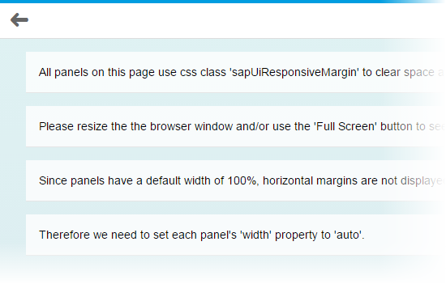

Using Predefined CSS Margin Classes
Using Predefined CSS Margin Classes
Unlike paddings, margins are transparent, are not part of the control's clickable area, and they collapse with adjacent margins, meaning that they do not add to each other. For instance, if you have two 32px margins next to each other, the result is that only one 32px margin is displayed, not 64px of space.
All margins predefined in SAPUI5 support right-to-left (RTL) languages: when you add a margin to the left, we make sure that it's displayed on the right if your user has chosen an RTL language such as Hebrew or Arabic. For our CSS classes, we offer four standard sizes, namely tiny (0.5rem or 8px), small (1rem or 16px), medium (2rem or 32px) and large (3rem or 48px).
There are four types of margins available:
- Full margins, which completely surround your control
- Single-sided margins
- Two-sided margins
- Responsive margins, which adapt to the available screen width
Full Margins
If you would like to clear an area all around your control, use one of the following margin classes:
-
sapUiTinyMargin -
sapUiSmallMargin -
sapUiMediumMargin -
sapUiLargeMargin
Single-Sided Margins
For single-sided margins, choose a size (Tiny, Small,
Medium, or Large, which stands for 8, 16, 32
or 48px respectively) and a direction (Begin, End,
Top, or Bottom, where Begin
is left and End is right and vice versa in RTL mode). For example,
if you need to clear a 32px space to the left of your control (or to the right in
RTL mode), you would add the class sapUiMediumMarginBegin. You can
also add several classes at once, as long as they point to different directions. For
example, you would add classes sapUiLargeMarginEnd and
sapUiLargeMarginBottom to clear a 48px space to the bottom and
to the right of a control (or to the left in RTL mode).
Here are the classes we provide for single-sided margins:
|
|
|
|
|
Two-Sided Margins
If you’d like to clear the space to the left and right or top and bottom of your control,
we've provided several two-sided margin classes for you to use. Again, just choose
the size and orientation that you need (BeginEnd,
TopBottom). For example, if you need to clear a 32px space both
to the left and right of a control, you would add the class
sapUiMediumMarginBeginEnd. Here are the classes that are
available:
|
|
|
|
|
We've also provided a set of negative margin classes that add a two-sided
(BeginEnd) negative margin of an element. The negative margins
are useful for aligning elements with built-in paddings.
|
|
|
|
|
Responsive Margins
If your application is supposed to run on smartphone, tablet and desktop, it can be useful to
choose your margins depending on the screen width that is available. SAPUI5 now comes with
CSS class sapUiResponsiveMargin, which does just that. It works
with media queries to determine the available screen width and adapts its margin as
follows:
| Screen Width | Example |
|---|---|
Screen width less than 600px (smartphones): For devices such as these,
sapUiResponsiveMargin provides a 16px (1rem)
bottom margin to your control. Each of the panels shown in the
screenshot is using sapUiResponsiveMargin. As a
result, they're all clearing the same 16px area of space below
them. |
|
Between 600px and 1023px (tablets and small desktops): For these,
sapUiResponsiveMargin provides a 16px (1rem)
margin all around your control, as you can see in the
screenshot. |
 |
Larger than 1023px (large desktops): For these, sapUiResponsiveMargin
provides 16px (1 rem) top and bottom margin as well as a 32px (2
rem) left and right margin, as shown in the screenshot. |
 |
The following exceptions to these rules exist:
- When your
sapUiResponsiveMargincontrol is placed within ansap.m.SplitAppmaster view, it's always provided with a 16px bottom margin and nothing else. Here, the thresholds mentioned previously do not affect your control. - Within a
SplitApp’s detail view, there's always a 16px margin all around yoursapUiResponsiveMargincontrol, regardless of the available screen width. Usually, theSplitAppis responsive as well, though. If it hides its master view because the available screen width isn't sufficient, or if it’s running in ‘HideMode’, your control also ignores the fact that it's placed into aSplitApp’s detail view and it becomes responsive again.
Controls with 100% Width
When applying classes with horizontal margins to a control, such as
sapUiSmallMargin or sapUiSmallMarginBegin, for
example, make sure that your control doesn’t have a 100% width. If your control has
a width property (which most controls have), set the width value to
auto, for example:
<Panel width="auto" class="sapUiLargeMarginBegin
sapUiLargeMarginBottom">If your control does not have a width property but still
has a default width of 100%, you can add our CSS class
sapUiForceWidthAuto to your control, which ensures that the
control’s default width is overwritten with the value auto. An
example for such a control is sap.m.IconTabBar.
Adding Margin Classes to Your Code
To apply the classes described here in your code, simply add a class
attribute and the margin class to the respective control tag in your declarative xml
views. If you need to add several classes at once (which can be the case if you’re
using single-sided margins), separate them by a space. Here’s a sample snippet
containing a panel and an IconTabBar:
<mvc:View
height="100%"
controllerName="sap.m.sample.StandardMarginsEnforceWidthAuto.Page"
xmlns:mvc="sap.ui.core.mvc"
xmlns="sap.m">
.
.
.
<Panel width="auto" class="sapUiLargeMarginBegin sapUiLargeMarginBottom">
<content>
</content>
</Panel>
<IconTabBar
expanded="{device>/isNoPhone}"
class="sapUiForceWidthAuto sapUiMediumMarginBeginEnd">
<items>
.
.
.
</items>
</IconTabBar>
.
.
</mvc:View>If you would like to add margins to javascript code, use the control’s
addStyleClass method. For example:
myPanel.addStyleClass(‘sapUiLargeMargin’). Again, if you need
to add several classes at once, you can do so by separating them by a space. Make
sure that you set the panel’s width to auto as shown here:
myPanel.setWidth(‘auto’).
Removing Margins
If a control comes with a margin that you don’t want for some particular reason, you can use
one of our convenience classes to remove it. You can either use
sapUiNoMargin to remove the margins all around your control, or
you can choose one or more classes from the following list to remove a margin in one
or more particular directions:
-
sapUiNoMarginTop -
sapUiNoMarginBottom -
sapUiNoMarginBegin -
sapUiNoMarginEnd
Sample
For a detailed example of how our predefined margin classes work, see the Samples.